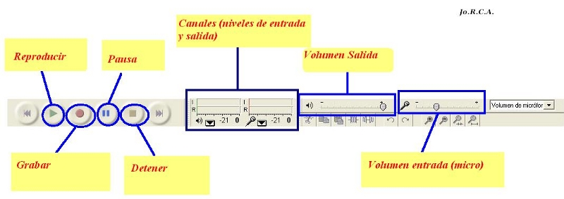
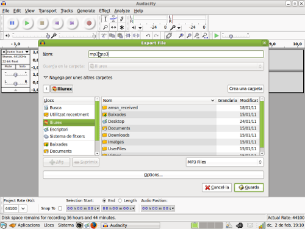

2.1 Funciones Básicas
En este apartado detallamos las principales funciones y características del editor de Audio Audacity.
El conocimiento, por parte del alumno, de las mismas le permitirá realizar nuestras primeras ediciones y grabaciones de ficheros de sonido.
Este programa permite realizar múltiples tareas con nuestros ficheros de sonido digital, entre las que caben destacar:
-
Grabación: Permite
grabar tanto de micrófono como de la línea de entrada u otras
fuentes. Enlaza varias pistas diferentes en una sola canción,
pudiendo grabas hasta 16 canales a la vez (si está soportado por la
tarjeta de sonido).
-
Exportación/Importación: Capaz de importar ficheros de audio, editarlos y mezclarlos con otros. Soporta los formatos de audio más comunes, importa y exporta WAV, AIFF, AU y OGG, además de MP3 con la librería LAME.

-
 Edición: Muy
sencilla (cortar, copiar, pegar, deshacer) y eficiente. Posee
herramientas gráficas de selección de puntos o zonas de canciones. Permite modificar muestras individuales de un fichero.
Edición: Muy
sencilla (cortar, copiar, pegar, deshacer) y eficiente. Posee
herramientas gráficas de selección de puntos o zonas de canciones. Permite modificar muestras individuales de un fichero.
-
Calidad de sonido: Audacity puede trabajar con pistas de 16, 24 y 32 bits bajo frecuencias de muestreo que llegan hasta los 96000 Hz, válidas para la creación de CD con calidad de SuperAudio. Para configurar la calidad del sonido debemos acceder a la pestaña Calidad de la ventana Editar->Preferencias.
-
Efectos: Permiten, entre otras cosas, supresión de efectos típicos como la estática, cambios frecuenciales tanto con la ecualización como con técnicas más avanzadas como pueden ser la FFT o efectos Bass Boost. Asimismo se dispone también de efectos para ajustar el volumen mediante compresión, amplificación o efectos de normalización. Otros efectos permiten la introducción de ecos, efecto phaser o wahwah o el de reproducción inversa.
- Análisis: Con sus utilizades nos permite disponer de un análisis detallado de ls diversas frecuencias.
- Plugins y bibliotecas: Este programa permite descargar nuevas funcionalidades y agregarlas a nuestra aplicación.
Jo.R.C.A. 2004 - 2011

Edición de Audio y Video con Software Libre by José Ramón Cerdeira Alonso is licensed under a Creative Commons Reconocimiento-No comercial-Compartir bajo la misma licencia 3.0 España License